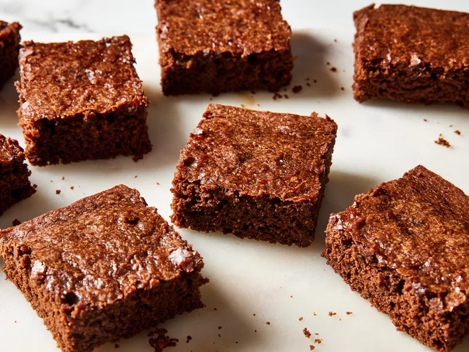

These vegan brownies are made with cocoa powder for a rich and gooey chocolaty treat. If you prefer brownies that are a little more solid, you can bake the brownies for longer than the recommended time. Great for people with egg or dairy allergies, too!